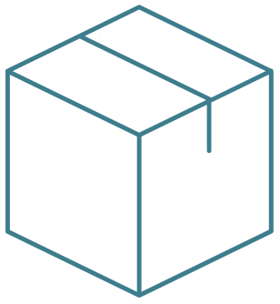
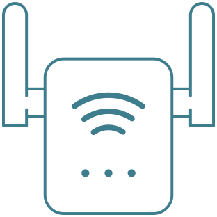
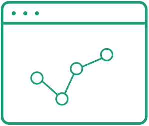

Output in Zip or ISO format
Package all your content in the desired format
and transfer it to any storage device.

Enjoy full control
Customize homepage and linking structure
with simple configuration files.
Access content online and offline
Switch modes freely with your discretion
Visually distinguish between offline and online modes.


Understand user behavior
All links optionally integrate with Google Analytics.